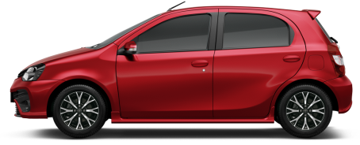
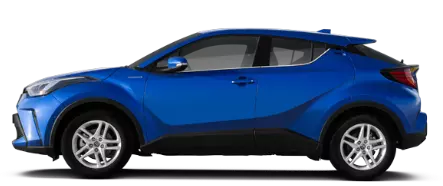
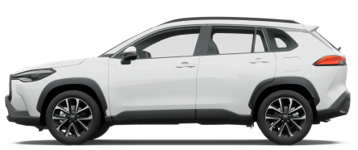
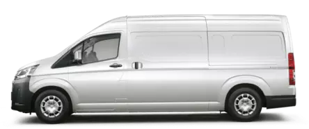
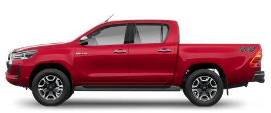
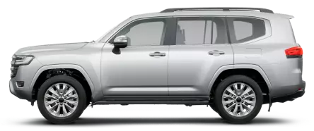
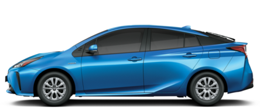
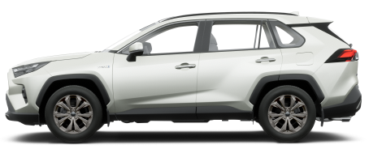
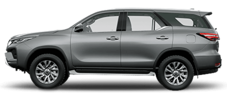
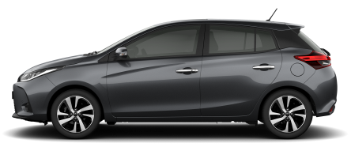

-

TOYOTA Etios XLS Pack
2022
GARANTIA
Su motor Dual VVT-i, sus opciones de caja automática de 4 marchas y caja manual de 6 marchas y su pantalla táctil, lo convierten en tu mejor elección.
-

TOYOTA C-HR
2021
hybrid
El nuevo C-HR es un crossover que se suma a la familia híbrida de TOYOTA, desarrollado bajo los conceptos de la nueva forma de fabricar vehículos (TNGA) y con un diseño de vanguardia que realza sus características principales.
-

TOYOTA Corolla Cross
2022
GARANTIA
Llegó el nuevo Corolla Cross! Con la plataforma TNGA que conoces del nuevo Corolla y el andar y confort que solo un SUV puede darte. Disponible en las versiones XLI, XEI, XEI Híbrido, SE-G y SE-G Híbrido.
-

TOYOTA Hiace
2021
GARANTIA
La nueva TOYOTA Hiace es la máxima representación de una larga trayectoria, siendo el furgón más elegido en el mundo desde 1967 y demostrando ser el mejor vehículo posible, haciendo sentir bien a sus clientes y usuarios.
-

TOYOTA Hilux
2022
GARANTIA
La nueva TOYOTA Hilux 2022 presenta un nuevo diseño que le da una mayor robustez, dándole un carácter fuerte, además de incorporar más potencia a su motor.
-

TOYOTA Land Cruiser 300
2021
GARANTIA
La historia de Land Cruiser comienza en 1951 con Toyota BJ, primera generación de este modelo. Desde ese momento, Land Cruiser continúa evolucionando en calidad, confiabilidad y durabilidad, y se ha ganado la reputación de ser un vehículo que permite a los usuarios llegar a todas partes, lo cual se fortalece a lo largo de su historia.
-

TOYOTA Land Cruiser Prado
2021
GARANTIA
Esta versión de Land Cruiser Prado logra una admirable combinación de lujo y potencia, ideal para quienes buscan sofisticación y tecnología en un vehículo urbano con el empuje y resistencia de uno off-road.
-

TOYOTA Nuevo Corolla
2022
Hybrid
¡El sedán más vendido de la historia se renovó completamente! ofrece dos variantes de motorización: El motor híbrido con tecnología de última generación que ya conocés, y un renovado 2.0L Dynamic Force que le brinda una potencia de 170CV.
-

TOYOTA Prius
2022
hybrid
El nuevo Prius actualiza su carácter vanguardista y presenta un cambio integral de diseño y equipamiento. Su exclusiva tecnología Hybrid Synergy Drive combina un motor de combustión de 1.8L
-

TOYOTA RAV4
2022
Hybrid
La RAV4 Hybrid con sistema híbrido Auto-recargable que cuenta con dos motores (naftero + eléctrico) y regenera energía cuando el vehículo desacelera o frena, por lo que no es necesario enchufarlo a una fuente de energía externa.
-

TOYOTA SWA
2021
GARANTIA
La nueva SW4 llegó para demostrar que se puede combinar de manera perfecta toda la fortaleza con máxima elegancia y sofisticación.
-

TOYOTA YARIS
2022
GARANTIA
El nuevo TOYOTA Yaris 2022 completa la familia TOYOTA ahora incorpora más seguridad (Con TOYOTA Safety Sense en sus versiones XLS Pack y S CVT) y más conectividad, con Car Play y Android Auto en todas sus versiones.
SOMOS JORGE FERRO,
un concesionario oficial TOYOTA
Único con un exclusivo Servicio Posventa que te ofrece Mantenimiento Express, Mecánica Convencional,
Reparación Integral de Carrocería y Lavado Premium. Estamos equipados con la última tecnología y personal
Técnico Certificado que trabaja en procesos de mejora continua gracias a la metodología TOYOTA Kaizen.
Facilitamos todos los detalles para que pueda tener el TOYOTA 0km o Usados Seleccionados que estás
necesitando de manera rápida y responsable, prestándote el asesoramiento necesario y basándonos siempre
en la comercialización transparente de vehículos.
Nuestro concesionario se encuentra ubicado en Av. Libertador 6777, Nuñez, Ciudad Autónoma de Buenos Aires.
Realizamos ventas a todo el país.
¿DONDE ENCONTRARNOS?
TOYOTA Plan de Ahorro en JORGE FERRO, una experiencia única
La mejor forma de llegar a tu TOYOTA financiado sin interés. Somos únicos en el mercado por contar con un sistema de ENTREGA SEGURA exclusiva para nuestros clientes. Consultá por la modalidad que te ayuda a tener el TOYOTA que buscás, cuando lo querés! Planes Adjudicados o Licitación para retirar lo antes posible!
Contactanos!